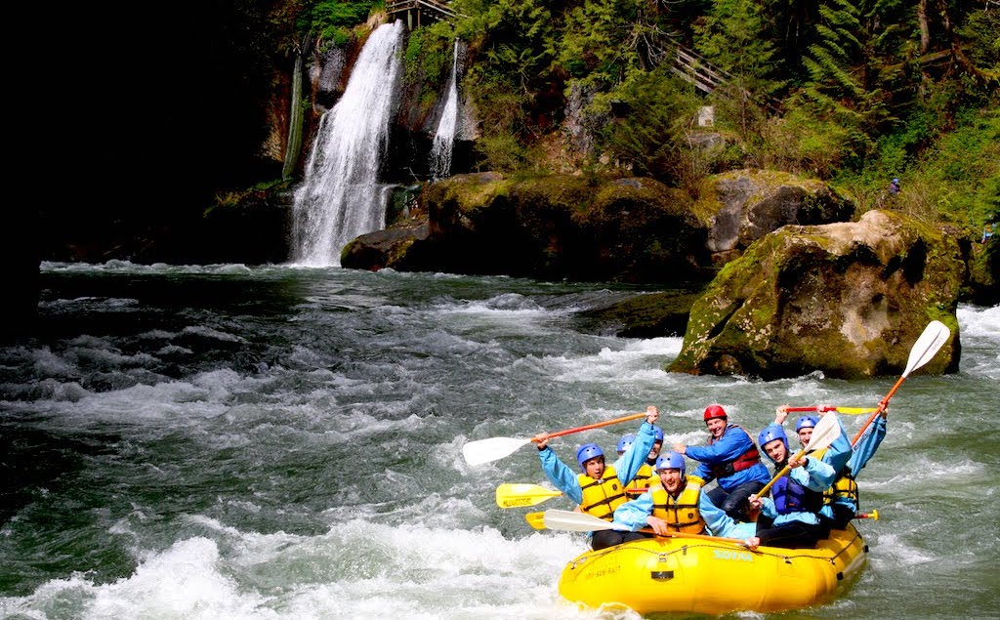

Exploring the Nature

Rafting and whitewater rafting are recreational outdoor activities which use an inflatable raft to navigate a river or other body of water. This is often done on whitewater or different degrees of rough water.
Beyond this icredible marine experience, rafting offers a good chance to explore different views and places of nature alongside enjoying the rafting on boat with enjoyment.
However, rafting also requires proper training, guidance, knowledge and about safety methods. Everyone performing would be aware about its risk and danger. Dealing with risk is often a part of the experience.
Some Facts About Rafting
- Rafting was invented in 1842 by US soldiers Lt.John Fremont and Horace H. Day.
- The longest rafting river is Brahmaputra River in Pasighat, Arunachal Pradesh, India.
- Adrenaline pumping through your veins as you crash through the rapids in rafting.
- Rafting is one of the most favourite thing of the individuals who love nature.
- Rafting can help you as stress buster and help in fitneds and we can experience adventure in water.
- Individuals have to undergo through some of the requirements before performing rafting for their safety.